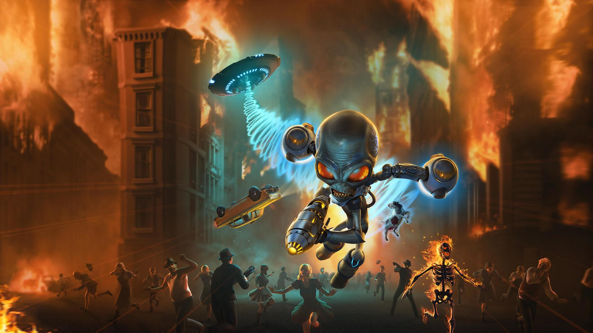
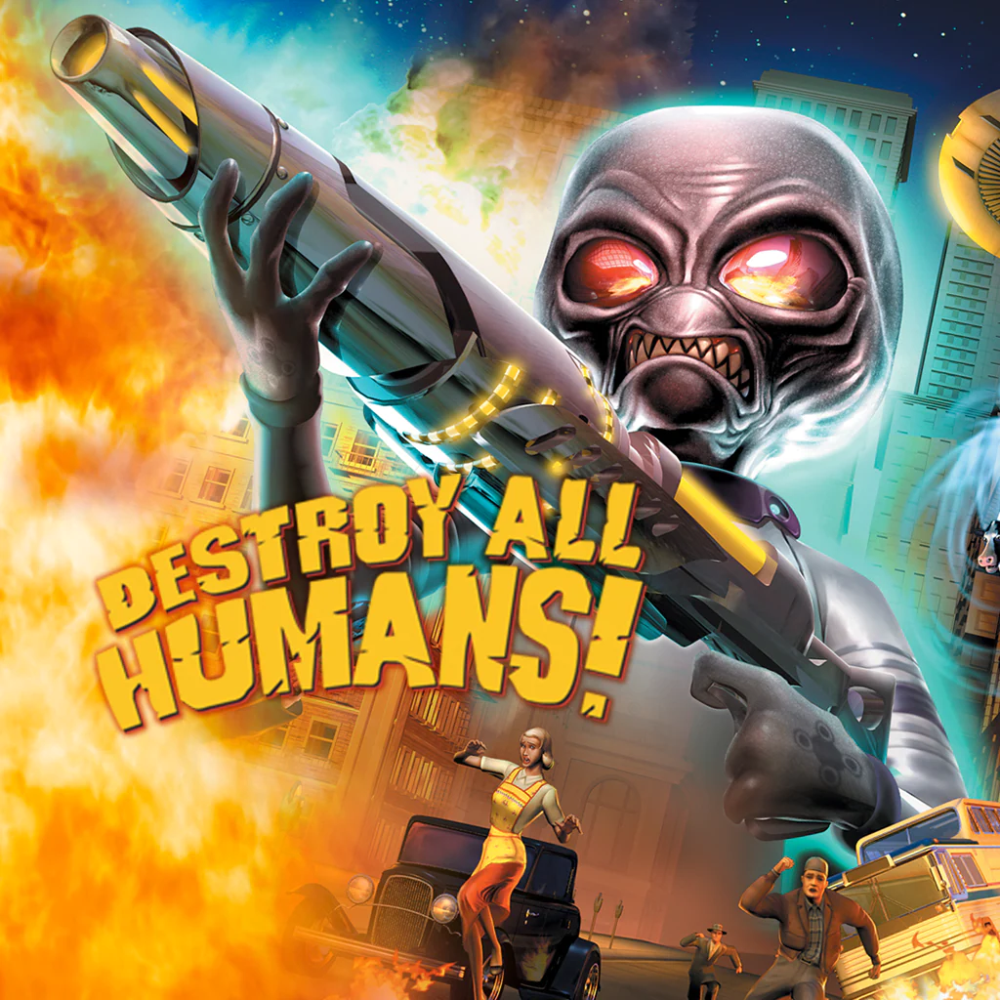
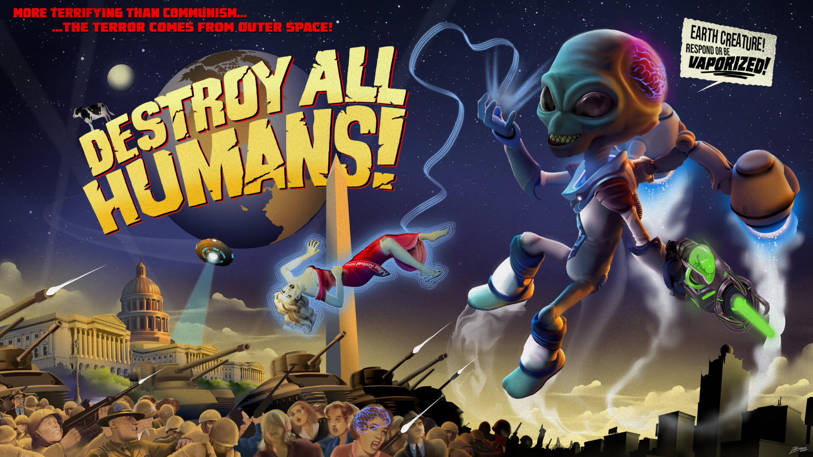

Destroy All Human!
Destroy All Human is an open world game action-adventure game. The game is set in the 1950s a sarcastic alien sent to Earth to harvest human DNA and subjugate humanity. Players take on the role of Crypto, using advanced alien technology, psychic abilities, and flying saucers to terrorize humans, battle government agents, and destroy key locations. The game features a mix of open-world exploration and mission-based gameplay, with a satirical tone poking fun at Cold War-era paranoia, pop culture, and B-movie science fiction.

- Released: July 28, 2020
- Publishers: THQ Nordic GmbH
- Developers: Black Forest Games GmbH
- Moby Score: 7.3
- Critics: 74%
- Players: 4/5 stars
- Genre: Action
- Perspective: Behind view
- Interface: Direct control
- Setting: Sci-fi/futuristic
- Narrative: Comedy
- Players: 1
“Rebuilt from the ground up in every way, Destroy All Humans! (2020) puts every other remaster on notice -- this is how it's done.”
90/100 - GamingTrend
GamingTrend review
“Destroy All Humans is a fantastic, faithful experience. Both older fans and new fans will find a lot of enjoyment here and hopefully we will see a lot more of Crypto's antics going into the new generation.”
8.5/10 - GameGrin
GameGrin Review
“It may be a bit of a stretch to see if any game holds up after 15 years, but Destroy All Humans! is still a mindless romp of manic mass destruction that excels in the replayability department. A brilliantly polished slice of nostalgia, Destroy All Humans! knows exactly where to focus its energies with its silly story, updated gameplay and a graphical overhaul that is light-years ahead of the original invasion.”
8.5/10 - Critical Hit
Critical Hit review